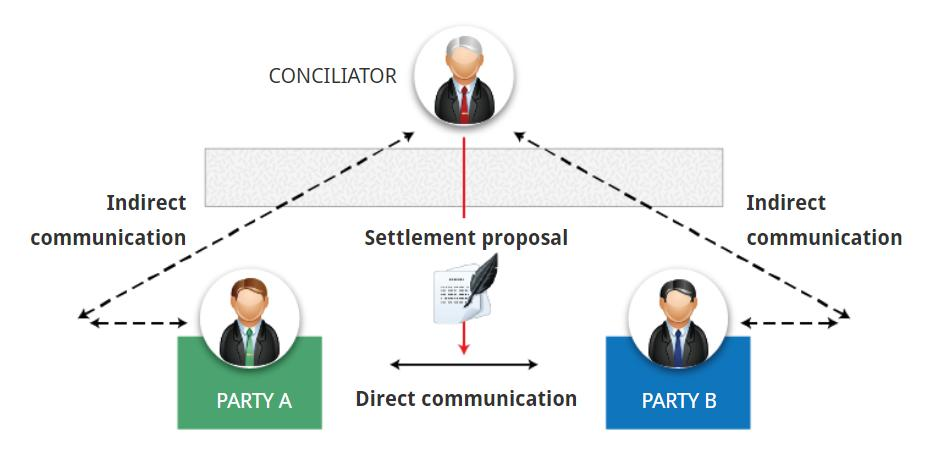

Conciliation:调停
Questions: Select the answer you consider to be correct.
Q1: Which of the following statements distinguish conciliation from mediation? (下列哪一项陈述将调停与调解区分开来?)
(1)In conciliation, the neutral’s role culminates in a settlement proposal. (在调停中，中立者的作用最终形成和解提案。)
(2)Conciliation is always more expensive than mediation. (调停总是比调解更昂贵)
(3)In conciliation, the third party has the authority to impose a binding decision on the parties. (在调停中，第三方有权对当事人施加具有约束力的决定)
A1: The correct answer is ‘In conciliation, the neutral’s role culminates in a settlement proposal.’
(The main difference between the two mechanisms is therefore ‘whether the third party offers suggestions for resolution or simply lets the parties achieve resolution on their own’.) (因此，两种机制的主要区别在于“是由第三方提出解决建议，还是简单地让当事人自行解决”。)
Q2: Which of the following statements accurately describe conciliation? (以下哪项陈述准确地描述了调停？)
(1)Conciliation has been used effectively in international, labour and family disputes. (有效运用调停手段解决国际、劳动、家庭纠纷)
(2)Conciliation on is a non-adversarial mechanism. (调停是一种非对抗性机制)
(3)Conciliation allows parties to preserve their relationship. (调停可以使当事人维持关系)
(4)All of these. (所有这些)
A2: The correct answer is ‘All of these.’
(Conciliation is a non-adversarial mechanism, it allows the parties to preserve their relationship, a characteristic that has allowed it to be used effectively in international, labour and family disputes.) (调停是一种非对抗性机制，它允许各方维持其关系，这一特点使其能够在国际、劳工和家庭纠纷中有效使用。)
Q3: Which of the following statements are characteristic of institutional conciliation? (下列哪项陈述是机构调停的特征？)
(1)Institutional conciliation is guided by rules. (机构调停以规则为指导)
(2)Institutional conciliation is less formal than mediation. (机构调停不如调解正式)
(3)In institutional conciliation, the conciliator has the power to impose a binding decision. (在机构调停中，调解员有权作出有约束力的决定)
(4)All of these. (所有这些)
A3: The correct answer is ‘Institutional conciliation is guided by rules.’
(Institutional conciliation is provided by public or private organisations which are guided by certain rules. These rules ‘rarely move beyond the general goal of facilitating an agreeable settlement. They do not specify a conciliator’s duties in detail.’) (机构调停由受某些规则指导的公共或私人组织提供。这些规则 “很少超出促进达成令人满意的解决方案的总体目标” 。它们没有详细规定调停人的职责。”)
Congratulations!
You have now completed our overview of the Conciliation mechanism.
We have looked at the following key areas:
<1>Conciliation first appeared in the UK via the Conciliation Act 1896 and in the US through Congress in 1913; (调停首先通过1896年的《调停法》出现在英国，1913年通过国会出现在美国;)
<2>The difference between mediation and conciliation is whether the neutral offers suggestions for resolution or simply lets the parties achieve a solution on their own. (调解和调停之间的区别在于中立者是为解决问题提供建议，还是简单地让双方自己达成解决方案)
<3>There are two types of conciliation: institutional and non-institutional; (调停有两种类型: 机构性和非机构性)
<4>The role of a conciliator is to assist the parties to agree on a process by which they will attempt to solve their dispute; (调停员的作用是协助当事人就他们试图解决争端的程序达成一致)
<5>Conciliation is non-adversarial mechanism; it allows parties to preserve their relationship. (调停是非对抗性机制，它允许当事人保持他们的关系)
What is the aim of this module?
It is unclear when conciliation was first used, although it seems to have played an important role in resolving disputes during the European and American industrial eras. (虽然在欧洲和美国的工业时代，调停似乎在解决争端方面发挥了重要作用，但它首次被使用的时间尚不清楚。)
1789-1799:
It was during the revolution that conciliation was first institutionalised in France. (在大革命期间，调停在法国首次制度化)
1896:
Conciliation first appeared in English law, in the Conciliation Act. (调停最早出现在英国的《调停法》中。)
1913:
In the US, Congress expressly authorised the Department of Labour to establish ‘commissions of conciliation’ to help resolve disputes outside of the court system. (在美国，国会明确授权劳工部设立 “调停委员会” ，以帮助解决法院系统之外的纠纷.)
Although the words conciliation and mediation are sometimes used interchangeably, the two terms are actually different. (虽然调停和调解这两个词有时可以互换使用，但这两个词实际上是不同的。)
Conciliation: 调停
The third party suggests a solution, which is non-binding on the parties. More formal than mediation. (第三方提出解决方案，该解决方案对双方不具有约束力。比调解更正式。)
Mediation: 调解
The third party facilitates the parties in dispute achieving their own solution. Can involve separate meetings between the third party and each party. (第三方协助争议双方自行解决问题。可以包括第三方和双方之间的单独会议。)
‘A conciliator lacks any authority to impose a solution or procedure on the parties but rather helps them negotiate with each other’. (调停员没有任何权力将解决方案或程序强加给双方，而是帮助他们相互谈判.) Hence, the ‘role of the conciliator is to assist the parties to agree on a process by which they will attempt to resolve their dispute.’ (因此,“调停员的作用是协助当事人就他们试图解决争端的程序达成一致。”)
A conciliator will not normally involve himself or herself with the substantive issues of the dispute other than perhaps to identify and daily the real issues of fact and law. (调停员通常不涉及争端的实质性问题,除了识别和日常的事实和法律的真正问题)
In a detailed statistical analysis of conciliations conducted in the United Kingdom, researchers found that ‘in general, conciliation of all types reduced the number of disagreements between the parties and generated settlements which the parties regarded as satisfactory in nearly 75% of all the agreed cases.’ (在英国进行的一项关于调停的详细统计分析中，研究人员发现，“总的来说，所有类型的调停都减少了当事人之间的分歧，并且在所有达成协议的案件中，当事人认为满意的和解比例接近75%。”)
Given that conciliation ‘affords flexibility to the parties as they are entitled to craft their own rules, select the conciliator of their choice, and decide when to abandon the process altogether’, the result above is not surprising. (鉴于调停“为当事人提供了灵活性，因为他们有权制定自己的规则，选择自己选择的调停员，并决定何时完全放弃该过程”，上述结果并不令人意外。)
Conciliation is a non-adversarial mechanism, and it allows the parties to preserve their relationship, a characteristic that has allowed it to be used effectively in international, labour and family disputes. (调停是一种非对抗性机制，它允许各方维持其关系，这一特点使其能够在国际、劳工和家庭纠纷中有效使用。)
Conciliation is the ADR mechanism where a neutral party meets with the parties both individually and together in attempt to resolve the dispute. (调停是一种ADR机制，由中立方与当事人单独或共同会面，试图解决争议。)
The neutral’s role is to help the parties to negotiate with each other and culminates in a settlement proposal which is non-binding on them. (中立者的作用是帮助双方进行谈判，并最终达成对各方不具约束力的和解提案。)